This page is a guide to learning the piece Pärtially in its right place on a tapping instrument such as the Chapman Stick or the acoustic Dragonfly DFA.
It's an exercise that demonstrates an example of constructing fingersticking patterns from a set of block chords across the bass / melody side of a freehands instrument like the chapman stick.
The Score (and tabs) to go along with the diagrams below is available ♪ here ♪
This piece began by me coming across a youtube video that had a piano player playing a short chord sequence of chords in a Radiohead song.
I not familiar with radiohead really, and I didn't even know the name of the song (at first), which turned out to be Everything In Its Right Place.
I liked the way the sequence moved from a (root) I C Major chord to a IV F Major chord. So, I put the sequence into musescore just to experiment with it a bit.
There is some debate as to what the key signature is of the original song. My construction does not have much relation to the orignal source so I just left the (initial) notated key signature as C Major
Th progression:
| CMaj | D♭ | E♭add2 | G♭Maj♯11 | FMaj |
Is the beginning of the song
As you can hear from the clip below, it starts with a stately slow tempo that, along with the harmonic flavor of the simply stated chords, linked together with a common tone in C, evokes a minimalistic feel, reminiscent of Arvo Pärt







'Fingersticking' is a term coined by Emmett Chapman which is a playing style reminsicent of guitar fingerpicking accomplished by arpeggiating and/or interleaving notes tapped by the left (bass) and right (melody) hands